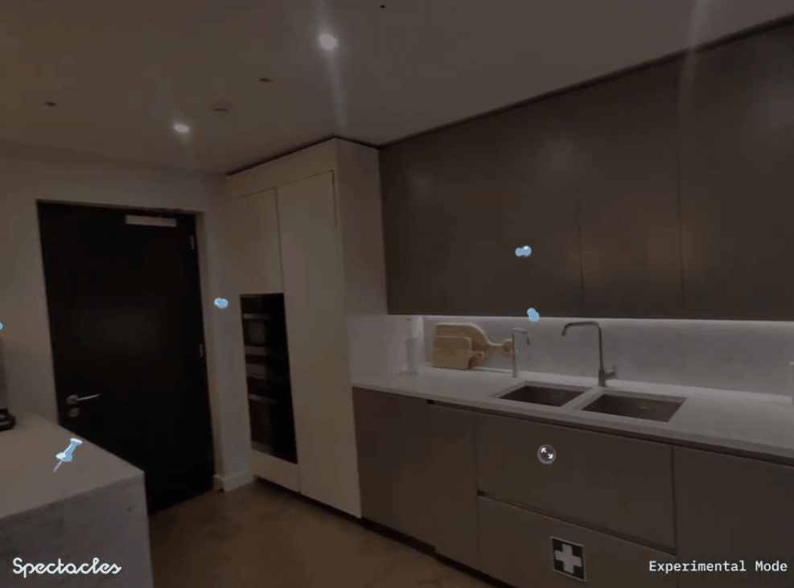

How to pronounce my name :
Pin it. Say it. Sell it.
PinPoint is a multi-platform spatial briefing system for showroom retail, built on Snap Spectacles, Snap Cloud, and a companion web portal.
It captures what customers see and say, anchors those reactions to the exact products that triggered them, and delivers a structured, retrievable preference profile that turns cold introductions into informed consultations. In other words, the showroom stops being a place customers forget and starts being one that remembers them.
A companion web dashboard (PinPoint Web) lets salespeople watch pins arrive in near real time, push suggestions back into AR, and rely on persisted profiles when customers return.
This project was submitted with a team of five to XRCC 2026, the world's largest independent XR & AI hackathon.
My Role: Ideation, Snap Cloud data design, Edge Functions, AI integration, Lens-to-backend integration, companion web development with realtime backend wiring
Platform: Snap Spectacles
Engine: Lens Studio
Lens languages: TypeScript
Backend: Snap Cloud (Data tables, Edge Functions, Realtime sync)
AI : OpenAI for transcription pipeline and recommendation system, Google Gemini for Object Detction
Companion web: HTML / CSS / JavaScript
Collaboration: GitHub
Problem
Showroom customers form rich, spatially grounded preferences while browsing, but most of that context is lost the moment it has to become a conversation. Intent is spatial; communication is verbal. Only a fraction of what they actually felt survives the translation. Worse, if a salesperson engages mid-browse, the customer has to start over from scratch, and the salesperson has to hold every detail in their head. The result is cognitive overload and indecision. 40 to 60% of qualified opportunities end in "no decision" . Salespeople spend 15+ minutes reconstructing the context the customer already formed, dig through catalogs to find the right fit, and when staff turn over or the customer returns later, all of it is gone.
Solution
PinPoint closes that gap by capturing customer intent directly in the showroom experience. Customers pin their reactions to real products as they browse, AI organizes those moments into a clear preference profile, and salespeople walk in already knowing what to show, what to skip, and what the customer actually cares about.
Clearer intent on the floor, quieter tooling—so retailers can focus on outcomes.
1. Pin, speak, and crop on Spectacles
Customers look at a product through Spectacles, spawn a spatial note by touching or pointing at it, and speak their reaction: "I love this handle but the color is too cold." The system bundles a quiet image capture, voice recording, real-time transcript, and world-locked anchor into one retrievable brief pinned to the exact product. Customers can also crop visual references and attach voice notes the same way.



PinPoint is a three-surface system with one backend connecting two frontends:
┌────────────────────┐ ┌──────────────────┐ ┌────────────────────┐ │ Snap Spectacles │◄─────►│ Snap Cloud │◄─────►│ Web portal │ │ (Customer AR app) │ │ (Backend) │ │ (Sales staff) │ └────────────────────┘ └──────────────────┘ └────────────────────┘ pin creation 8 data tables live dashboard voice capture 5 edge functions realtime sync spatial anchors product detection AI AR recommendations AR recommendations catalog matching session recap crop realtime sync profiles & insights
Spectacles (Lens Studio)
Built in Lens Studio. Handles image capture via the Camera Module, voice recording and transcription via the Remote Service Gateway, and pin creation as world-anchored placements via the Spatial Anchors API. The Spectacles Interaction Kit provides hand interactors and the cursor for targeting products.
Snap Cloud
The intelligence layer. Designed so AR processing stays on Spectacles and everything else runs in the cloud, keeping the glasses responsive and avoiding thermal throttling.
It uses 8 data tables to manage sessions, pins, products, visit summaries, and recommendations, with 5 edge functions powering object detection, AI summaries, preference extraction, catalog matching, and AR product recommendations.
Web portal
Built in HTML, connected to Snap Cloud Realtime. Renders each spatial note as a card with image thumbnail, transcript, AI summary, intent tags, and recommended products as they arrive. Surfaces a customer profile view aggregating preferences across sessions, and a product insight view showing how items are reacted to across the catalog. Salespeople can trigger pushes back to the Spectacles view from this surface.